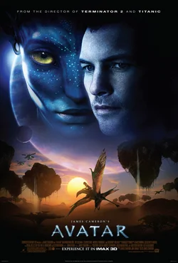

.jpg){kind=link}
 Explore film ↗
Explore film ↗Titanic
James Cameron
DIRECTOR PROFILE
James Francis Cameron (born August 16, 1954) is a Canadian filmmaker and explorer.
LIFE & CAREER
James Francis Cameron (born August 16, 1954) is a Canadian filmmaker and explorer. His films combine cutting-edge film technology with classical filmmaking techniques and have grossed over $10 billion worldwide, making him the second highest-grossing film director of all time. A major figure in the post-New Hollywood era, Cameron has received numerous accolades including three Academy Awards, two Primetime Emmy Awards, and four Golden Globe Awards, as well as nominations for six British Academy Film Awards.
Adapted excerpt from Wikipedia, CC BY-SA 4.0. Pronunciation notes omitted.
Read the full biographyImage: Kevin Paul. Source & rights: CC BY 4.0 ↗.
Profile reference: Director background ↗
Open this director checklist ↗
A selection of this director’s films available in the archive.
Explore film ↗James Cameron

Explore film ↗James Cameron